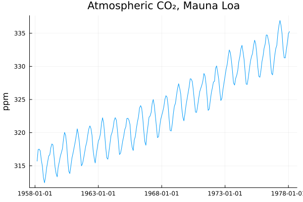
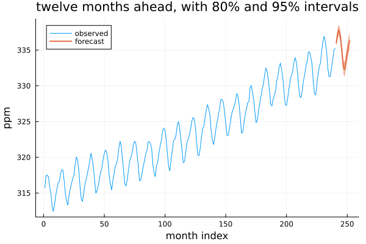

Your First Model
Fifteen lines, start to forecast. This page uses @example blocks rather than the jldoctest blocks the rest of this section uses, because the point here is partly the pictures.
A series
using TSAnalytics, Plots
d = dataset("cardox")
y = d.value[1:240]
dates = d.date[1:240]
println("Mauna Loa CO₂, ", dates[1], " to ", dates[end], " (n = ", length(y), ")")
println("range: ", round(minimum(y), digits=2), " to ", round(maximum(y), digits=2), " ppm")Mauna Loa CO₂, 1958-03-03 to 1978-01-31 (n = 240)
range: 312.43 to 336.93 ppmMonthly atmospheric CO₂ measured at Mauna Loa — the first twenty years of it, which is enough to fit on and short enough to keep this page quick. It ships with the package, so there is nothing to download.
Look at it first
plot(dates, y; legend=false, xlabel="", ylabel="ppm",
title="Atmospheric CO₂, Mauna Loa")
Two things are visible immediately and both matter for what follows. The series trends upward, steeply and without pausing. And it has a sawtooth riding on that trend — an annual cycle, as the northern hemisphere's plants take up carbon each summer and release it each winter.
Neither is subtle here, which is the point of looking first. A model that ignores the trend will forecast a flat line through a rising series; one that ignores the cycle will be wrong in a different direction every month of the year.
Fit something
m = auto_arima(y; seasonal=true, m=12, D=1)ARIMA(1,1,1)(0,1,1)[12], n=227 (ml, se: hessian)
StatsBase.CoefTable(Any[[0.3517878982436352, -0.663931777766626, -0.9612649169771323], [0.16664445266422004, 0.13575859659270867, 0.12456504060778176], [2.1110087531834596, -4.890532124153415, -7.716971891045012], [0.034771559504713494, 1.0056374417613311e-6, 1.1912590998816731e-14]], ["Coef.", "Std. Error", "z", "Pr(>|z|)"], ["ar1", "ma1", "sma1"], 0, 0)
Log-likelihood: -59.51 AIC: 127.03 BIC: 140.73That is the whole fit. auto_arima searched a space of candidate models and returned the one that scored best, and printing it gives the standard coefficient table.
m=12 says the seasonal period is twelve months, and D=1 takes one seasonal difference. D is optional — leave it out and auto_arima chooses it for you, the same way it already chooses d. It is passed here to keep this first fit explicit about what it is doing. Beyond the Defaults shows both.
What came back
println("selected order : ", m.order)
println("selected seasonal order : ", m.seasonal_order)
println("AIC : ", round(m.aic, digits=2))
println("BIC : ", round(m.bic, digits=2))
println("observations used : ", m.nobs)selected order : (1, 1, 1)
selected seasonal order : (0, 1, 1, 12)
AIC : 127.03
BIC : 140.73
observations used : 227ARIMA(1,1,1)(0,1,1)[12]. Read that as: one autoregressive term, one ordinary difference, one moving-average term, plus a seasonal moving-average term at lag 12 and one seasonal difference.
If that shape looks familiar, it should — ARIMA(0,1,1)(0,1,1)[12] is the airline model, the single most-fitted seasonal specification in the field. The search arrived one AR term away from it, unaided, on a series nobody told it was seasonal beyond the period.
Note nobs = 227, not 240. Thirteen observations are consumed by the differencing — one ordinary, twelve seasonal — and this package reports the count it actually computed a likelihood on. statsmodels would report 240 here. Neither is wrong; they are different conventions, and since every information criterion is built from nobs, AIC is not comparable across the two without knowing which you have. This is the most common cross-language surprise in the whole package, and Coming from R or Python collects the rest.
using StatsAPI: coef
println("coefficients: ", round.(coef(m), digits=4))coefficients: [0.3518, -0.6639, -0.9613]Forecast
f = forecast(m, 12)
println("next 3 months : ", round.(f.point[1:3], digits=2))
println("95% interval, first month: [", round(f.lower[1,2], digits=2), ", ",
round(f.upper[1,2], digits=2), "]")next 3 months : [336.0, 337.25, 337.81]
95% interval, first month: [335.42, 336.58]plot(1:length(y), y; label="observed", xlabel="month index", ylabel="ppm",
title="twelve months ahead, with 80% and 95% intervals")
plot!(length(y)+1:length(y)+12, f.point; ribbon=(f.point .- f.lower[:,2], f.upper[:,2] .- f.point),
label="forecast", linewidth=2)
The forecast continues both features the plot showed: the climb and the sawtooth. The interval widens with horizon, which is the model saying what it genuinely does and does not know — a one-month-ahead statement is worth more than a twelve-month-ahead one, and the picture should show that rather than hide it.
What just happened
Six steps ran, none of which you had to ask for:
- The differencing order was chosen by a test, not by eye — a KPSS stationarity test on the series, repeated until it stops rejecting.
- The seasonal difference was the one thing you supplied (
D=1), for the reason given above. - Candidate orders were searched stepwise, not exhaustively — a small number of neighbouring models are tried and the search walks downhill, which is what makes this finish in seconds rather than minutes.
- Models were scored on AICc, the small-sample-corrected information criterion. R's
auto.arimadefaults to the same thing; Python'spmdarimadefaults to plain AIC, so the two can select different models on identical data. - Each candidate was fitted by maximum likelihood through a Kalman filter. Every ARMA, ARIMA and SARIMA fit in this package runs the same state-space recursion underneath — the topic of Part VI of the Introduction, and genuinely the same code.
- The intervals came from the state covariance the filter was already carrying, not from a separate calculation bolted on afterwards.
Next
The fit above has not been checked. It reported a model and a forecast, and nothing so far asked whether the model fits — whether what it left behind looks like noise, or like structure it failed to capture.
That question is Was It Any Good?, and it is the more important half.